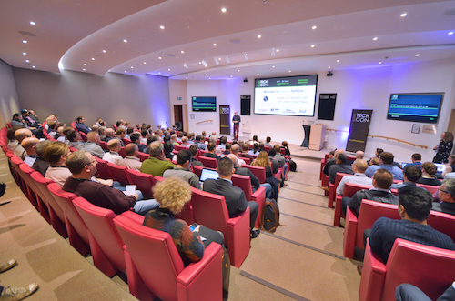
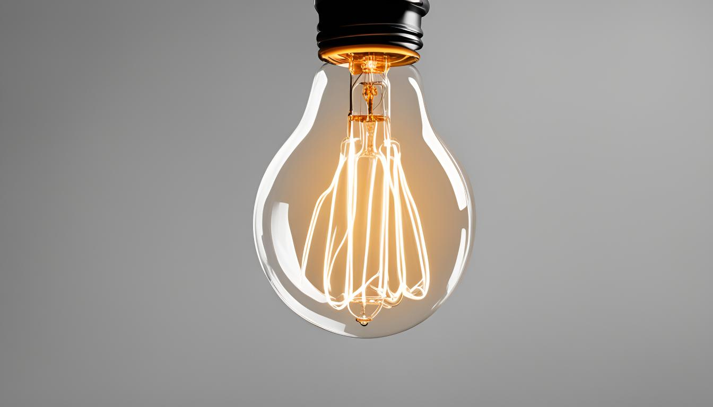
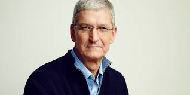

History
TechCon began in the early 2000s as a small gathering of tech enthusiasts, focusing on emerging technologies and trends.
Over the years, it expanded significantly, attracting industry leaders, startups, and tech professionals from around the
globe. Each year, the conference has grown in size and scope, featuring diverse topics such as artificial intelligence,
blockchain, and cybersecurity.
The event is now known for its high-profile keynote speakers, innovative presentations, and networking opportunities,
making it a key event in the tech industry calendar. TechCon continues to evolve, incorporating hands-on workshops,
interactive sessions, and exhibitions that showcase the latest advancements in technology.

Mission
The mission of TechCon is to inspire innovation, foster collaboration, and explore the latest trends in technology. It
aims to provide a platform for professionals to share knowledge and connect with others in the tech community.

Past Speakers
Satya Nadella
Bio: Satya Nadella is the CEO of Microsoft, known for transforming the company's culture and focusing on cloud computing
and AI initiatives.
Contribution: Under his leadership, Microsoft has seen significant growth in its Azure cloud platform and advancements
in AI research.

Pichai
Bio: Sundar Pichai is the CEO of Alphabet Inc. and its subsidiary Google LLC. He has overseen major developments in
Google products, including Android, Chrome, and Google Cloud.
Contribution: Pichai has led Google's expansion into AI and machine learning, making significant strides in natural
language processing and AI-driven products.

Susan Wojcicki
Bio: Susan Wojcicki is the CEO of YouTube, where she has overseen its growth into one of the largest video platforms
globally.
Contribution: Under her leadership, YouTube has expanded its creator ecosystem and implemented various innovations in
video streaming and content recommendation.
Tim Cook
Bio: Tim Cook is the CEO of Apple Inc., succeeding Steve Jobs. He has driven Apple's expansion into services, wearables,
and sustainability initiatives.
Contribution: Cook has overseen the launch of iconic products like the iPhone X and the Apple Watch, while championing
privacy and environmental responsibility.

Elon Musk
Bio: Elon Musk is the CEO of SpaceX and Tesla Inc., known for his vision of advancing renewable energy and space
exploration.
Contribution: Musk has pioneered electric vehicles with Tesla and aims to revolutionize space travel with SpaceX's
missions to Mars and beyond.